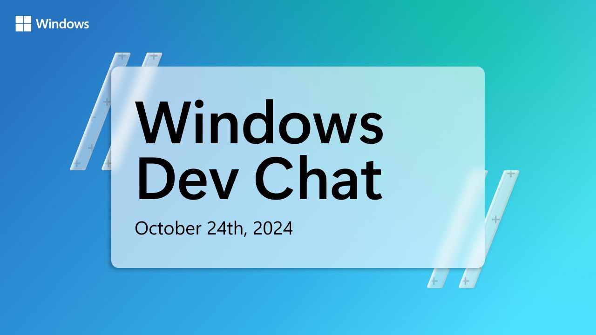

Windows Dev Chat - October 2024
Introduction - Gleb Khmyznikov
Windows Dev Chat Community Call is to ensure that developers are as productive as possible with Microsoft development tools with these updates covering an amazing set of features and updates and are looking for developers to engage with Microsoft.
Advanced Paste Updates - Jordi Adoumie
Advanced Paste supports custom paste actions allowing you to quickly reuse workflows which has been released already, along with features coming in 0.86 including Paste as File Actions to a .txt, .png or .html file as well as paste an image as text using OCR plus in an upcoming release will be able to use Semantic Kernel to intelligently chain your actions together.
Advanced Paste supports custom actions such as being able to paste as numbered list, but you could also add a custom action where you can provide a prompt which will use AI such as summarising an article, adding emojis and even translating it into French. You can then copy some text then invoke the Advanced Paste UI and be able to perform the custom action to perform the workflow, but you create any of your own custom actions.
You could also copy an image of a table and generate a table in markdown along with performing any other actions using natural language in Power Toys in order to do the right things. Power Toys creates a chain of actions using the Semantic Kernel and as create more actions it can put them together to do more complex things and do something multiple times to create the best sequence of events to perform an action.
OLIVE Auto Optimiser - Sam Kemp
Automatically optimised AI models for Windows Devices with OLIVE. Olive is an AI model optimisation toolkit for the ONNX runtime and is an easy-to-use and integrated toolchain for AI engineers where the following tasks can be composed into a workflow or pipeline including Finetuning (QLoRA/LoRA/LoftQ), Graph Capture (Dynamo Exporter/Model Builder), Model Optimisation (CPU/GPU/NPU/DirectML), Quantisation (GPTQ, AWQ, WOQ), Runtime tuning, Multi-LoRA serving and deployment. OLIVE automatically finds the optimised model for a given hardware target without requiring specialised knowledge and manual work.
You can take in an existing model such as Hugging Face and with OLIVE you can optimise with ONNX conversion, transformer optimiser, compression and quantisation which can be used with the ONNX Runtime with DirectML on Windows to run on CPU, NPU or GPU from various companies including Qualcomm, AMD, nVidia and Intel. It is an easy-to-use toolchain where you can do fine tuning and be able to capture graph efficiently and tweak runtime parameter and helps find an optimised model for you rather than having to do experiments manually to find the right model. It is possible to use OLIVE with macOS, Linux, Android and iOS.
OLIVE reduces frustration and time and automatically finds the most optimised model without requiring specialised knowledge, has cutting-edge model optimisation components with over forty built-in model optimisation components covering quantisation, compression, graph optimisation and finetuning and now has an easy-to-use CLI which makes it easier than ever for developers to optimise models for their applications. The OLIVE CLI is a simplified CLI for common model optimisation tasks with commands such as run to run any of the supported optimisation steps in the sequence you wish defined by an AI engineer in YAML or JSON, it can finetune to fine tune or optimise the base model, generate-adaptor to create an ONNX adaptor from a PEFT adapter, capture-onnx-graph to capture ONNX graph using PyTorch exporter or model builder, auto-opt to optimise a model with optional quantisation and quantize which will quantise a model for a given EP, precision and technique where the CLI takes curated workflows that underneath performs the relevant complex workflows.
React Native Conference Recap - Steven Moyes
What's new for react native for desktop, React Native is part of Microsoft's client platform offering along with WinUI and WPF, they had a presence at the React Universe conference in September and talked about the new architecture for React Native. With React Native you can use your web or JavaScript apps and React skills to build desktop applications that are truly native under the covers. React Native is used in parts of Windows, Microsoft 365 and PowerApps which use it to modernise these code bases that can be challenging to modernise.
How can you share native code across all the experiences for desktop and web and Microsoft has had a lot of good experience with adopting React Native and adoption is growing to build native experiences that target Windows and macOS. Microsoft Build 2024 talked about capabilities of Windows App SDK as the new architecture for React Native will be taking advantage of that new infrastructure for Windows App SDK such as XAML Islands, Windows Copilot Library and other features that can be used by modern React Native applications.
React Native where macOS support enabled more than Catalyst such as a with a menu bar application as it is truly native underneath and with Windows. Microsoft created a demo where they looked into hooking into the Windows Task Tray that uses Win32 APIs to target the system tray in a React Native application.
Terminal Sixel Image Support - Christopher Nguyen
Sixel Image Support in Windows Terminal Preview, Sixels are a bitmap image format that is now supported in the Windows Terminal Preview, which means you can see images in your Terminal and if using a CLI that has sixels in it then you'll see those images in your terminal to see logos or other images which it allows you to display .six images, but to display images that are not sixels you will need to encode them first from .jpg, .png, .gif or others.
WPF Debug - Ashish Kumar Singh
Debugging Windows Presentation Foundation, building WPF from source, importing wpf-debug.targets, verifying that WPF assemblies are loaded, opening a file and placing a breakpoint and validate, debug and fix any issues. There is a real issue logged into GitHub, you need to have Visual Studio Installed and need to modify the installation to add the wpf.vsconfig.workloads and then will need to Start Clean.
You can start by cloning the WPF repository then install the WPF workloads that are required to build WPF and can import the configuration for the workload from the Source Code for WPF to install the pre-requisite workloads. Once those workloads are installed you can then try to build WPF, you can change to the branch and then run the build command and build the debug configuration to connect to a sample application and then debug the code and then push any changes and have the sample application reflect those changes.
The issue was getting the hashcode for a thickness with different values was getting the same value of zero instead of different hashcodes, to do this can create a WPF application for example from the .NET 9 branch and then in the csproj to load the binaries from the checked out version of Windows Presentation Foundation that was built before and use this in the sample application along with making sure the platforms match the one that the WPF assemblies were built for and once ensure that those assemblies are being picked up and can put a breakpoint in the GetHashCode for Thickness is and identify the issue and then use the HashCode.Combine method to combine the hashcodes for Top, Left, Bottom and Right and then can build WPF again with the changes in it, wait for the build to complete and then clean up the sample application project to be sure everything is clean and is being used in the sample application and then can evaluate that the changes are in place and make sure that the hashcode values are different and are indeed changed.
It is a simple process to debug Windows Presentation Foundation, you could also learn by placing breakpoints and making changes and you could contribute to the community with any changes or issues you have fixed, this is a simple thing for beginners and is the first step to putting your contributions in place for the open-source Windows Presentation Foundation repository.